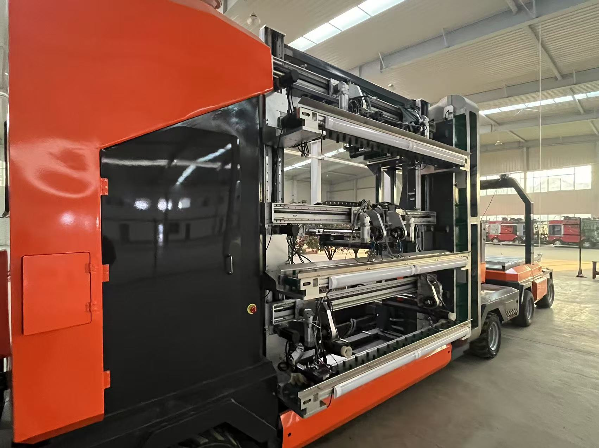
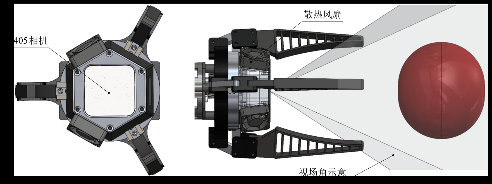
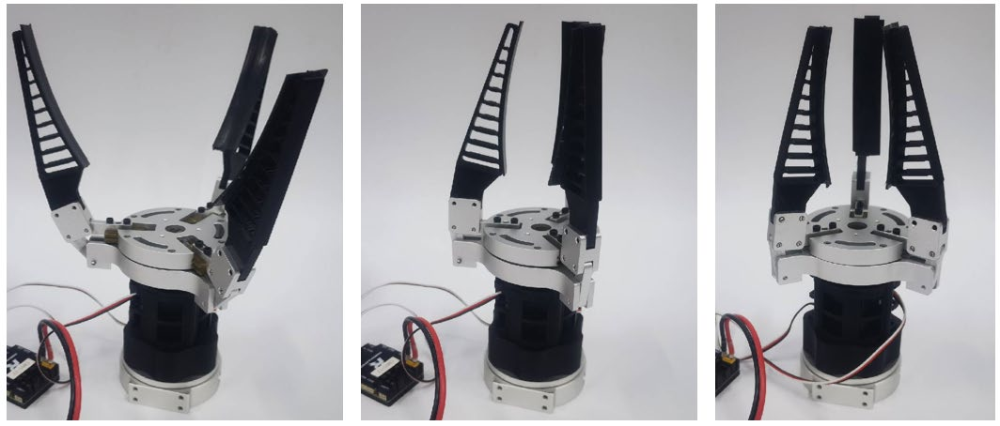
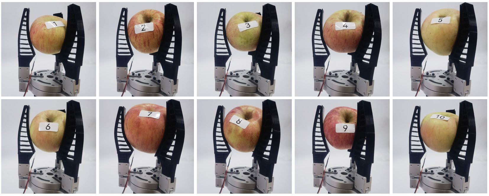

苹果高效采摘多臂机器人研发 Apple Efficient Picking Multi-arm Robot R&D
设计基于 PPRP 型构型的四自由度轻量化机械臂（碳纤维+铝合金，单臂约13.5kg），并研发内置深度相机的“眼在手中”式柔性三指夹爪。基于 Matlab 与 Recurdyn 完成运动学及电机选型校验，果园下地实测单果采摘落位低于13秒。
Designed a lightweight 4-DOF PPRP robotic arm (carbon fiber + aluminum, ~13.5kg) and an eye-in-hand flexible 3-finger gripper with a built-in depth camera. Validated kinematics and motor selection via Matlab and Recurdyn. Achieved picking time under 13s per apple in orchard field tests.
机械臂设计 / Robotic Arm
柔性夹爪 / Flexible Gripper
Recurdyn MBD



